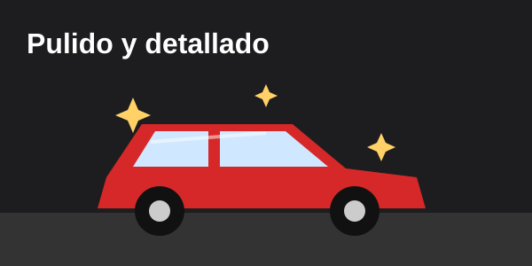

Lavado exterior
Prelavado con espuma activa, lavado a mano, limpieza de aros y secado con microfibra.
Tu auto merece verse tan bien como funciona. En nuestra área de lavado usamos productos biodegradables, microfibra y técnicas de detallado profesional para dejar tu vehículo impecable por dentro y por fuera, sin dañar la pintura.

Prelavado con espuma activa, lavado a mano, limpieza de aros y secado con microfibra.
Aspirado completo, limpieza de tablero, puertas, vidrios y desodorización.
Lavado profundo de asientos y alfombras con máquina inyección-extracción.
Corrección de rayones superficiales, pulido de faros y cera protectora de larga duración.

Precios para autos (sedán / hatchback). Para camionetas y vagonetas se aplica un recargo.
| Incluye | Básico | Completo | Premium |
|---|---|---|---|
| Lavado exterior a mano | ✔ | ✔ | ✔ |
| Aspirado interior | ✔ | ✔ | ✔ |
| Limpieza de tablero y vidrios | — | ✔ | ✔ |
| Lavado de tapicería | — | ✔ | ✔ |
| Pulido y encerado | — | — | ✔ |
| Restauración de faros | — | — | ✔ |
| Tiempo estimado | 40 min | 2 h | 4 h |
| Precio (Bs) | 50 | 180 | 350 |
Total: Bs 50